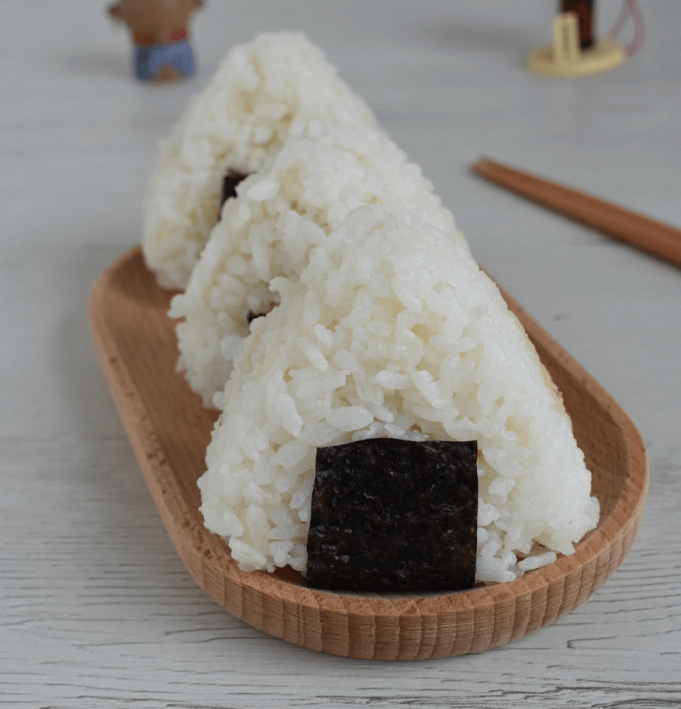

Para preparar un delicioso onigiri, primero lava el arroz con agua en un colador hasta que el agua salga clara, lo que asegurará la textura adecuada. Luego, combina agua y arroz en un cazo y llévalo a hervir hasta el punto en que el agua esté a punto de derramarse; en ese momento, apaga el fuego. Si todavía queda agua, reduce el fuego al mínimo hasta que se evapore por completo...
